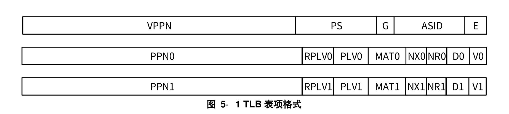

4.1. LoongArch的地址管理
龙芯架构中虚拟地址空间是线性平整的。在LoongArch64架构下，264字节的空间并不都是合法的，下面实际说明：
物理地址空间
在LoongArch64下，内存的物理地址范围[0, 2PALEN-1]
其中，可以使用指令cpucfg读取配置字0x1的PALEN域来确定具体的值
li.w $t0, 0x1
cpucfg $t1, $t0 # $t1保存读取的配置字， $t1[11:4]的值是：所支持的物理地址位数的值减1
虚拟地址空间
当CPU复位的时候，也就是CSR.CRMD[1]的
DA=1 && PG=0
此时，物理地址默认等于PA[PALEN-1:0] = VA[PALEN-1:0]
(PA: Physical Address, 物理地址)，(VA: Virtual Address，虚拟地址)当CPU使能映射地址模式: 也就是CSR.CRMD的
DA=0 && PG=1时，
VA虚拟地址有效宽度是VALEN，此时可以通过cpucfg指令读取配置字0x1的[19:12]位，表示所支持的虚拟地址位数减1当采用页表映射时，虚拟地址最高位必须满足VA[63:VALEN] = SigExt(VA[VALEN-1])，即符号位扩展。如果不满足则生成地址错误异常。
比如：我现在CPU最大支持的虚拟地址是48位，则VALEN=48。 如果VA[63:48] =/= {17{VA[47]}}，则会报错！
注意在CPU复位的时候，是不需要进行这种非法性检查。
4.1.1. 直接地址翻译模式
LoongArch的直接映射地址翻译模式是一个比较特殊的映射模式，相比于其他的架构X86，ARM，RISC-V等。它是将一个很大的虚拟地址空间 线性的映射到了一个同等大小的物理空间（这里并没有要求这个物理地址空间都存在）。
当CSR.CRMD的DA=0 && PG=1时， 如果再配置了CSR.DMW0-CSR.DMW3寄存器，则可以使用此模式翻译。
也就是说，CPU复位以后，我们必须手动的设置CRMD，才能使用此模式的寄存器。复位情况下，是不能使用的。
具体的使用方法与说明我们详细看DMW章节
4.1.2. 映射地址翻译模式
在映射地址翻译的模式下，除了上述说明的直接地址翻译模式外，就是我们经常所说的页式管理机制，将内存划分为页大小的块， 然后通过TLB转换获得虚拟地址到物理地址的转换。然后才能实际访问对应物理地址的内存。
4.1.3. 存储访问的类型
LoongArch支持三种存储访问类型：
一致性可缓存： Coherent Cached，主要是用于我们正常的内存访问
强序非缓存：Strong-ordered UnCached，主要是用于一些设备空间
弱序非缓存：Weakly-ordered UnCached，不常用
下面我们简称 CSR.CRMD的DA=1 && PG=0时 为关闭MMU， CSR.CRMD的DA=0 && PG=1时 为打开MMU，
当CPU复位的时候，此时CSR.CRMD的
DA=1 && PG=0时, CSR.CRMD寄存器管理
取指令的访问类型：由CSR.CRMD.DATF决定
当其他load/store指令时的访问类型：由CSR.CRMD.DATM决定
当打开MMU时，即
DA=0 && PG=1，
此时如果地址落在了DMW内，则此时的访问类型由命中的DWMX.MAT域来决定。
如果地址落在了页表管理的页内，则此时由页表表项的[5:4]也就是MAT来管理。
小技巧
如果我们设置了一个地址A，然后这个地址既落在了DMW内，也有相应的页表映射，此时我们以DMW为主。
也就是说CPU首先访问DMW，返回如果命中的话，就不会再去查找TLB了。
错误
CSR.CRMD的DA和PG的可能组合是DA=1 && PG=0 或者DA=0 && PG=1，
其他的组合情况，处理器的行为不确定，因此需要特殊注意！
4.2. LoongArch的TLB结构
本章节我们来介绍龙架构下的TLB的结构。
4.2.1. 逻辑组织结构
LoongArch的TLB主要份两部分组成，一个是STLB，另一个是MTLB。下面详细介绍：
STLB（singular-Page-Size TLB）：从名字就可以看出其功能，
STLB中的表项的页大小都是固定的，其大小可以通过CSR.STLBPS来设置。
MTLB (Multiple-Page-Size TLB): 存放的是页大小不一致的页表映射。
小技巧
STLB由于其只保存相同页大小的页表项，因此采用多路组相连的组织方式，一般容量比较大。比如2048项，分成8个组等。
硬件查询STLB的时候，假设有组的个数为WAY，每组的大小为SET，索引为INDEX，PAGE_SIZE为页大小，他们的关系如下：
STLB大小 = WAY * SET，SET = 2{sup}INDEX PAGE_SIZE = 2{sup}PS
索引index的计算方法： INDEX=VA[PS+LOG2(SET): PS+1]
MTLB保存多个页大小的表项，通常采用全相连的组织方式。全相连一般查询延迟比较大，因此容量比较小，通常为32或者64项等。
4.2.2. TLB的表项（以CPU的视觉）
硬件自动管理，无需过多的操作。
每一个 TLB 表项的格式如图所示，包含两个部分：比较部分和物理转换部分。
{kind=link}
TLB 表项的比较部分包括：
❖存在位(E)，1 比特。为 1 表示所在 TLB 表项非空，可以参与查找匹配。
❖地址空间标识(ASID)，10 比特。地址空间标识用于区分不同进程中的同样的虚地址，避免进程切
换时清空整个 TLB 所带来的性能损失。操作系统为每个进程分配唯一的 ASID，TLB 在进行查找
时除了比对地址信息一致外，还需要比对 ASID 信息。
❖全局标志位(G)，1 比特。当该位为 1 时，查找时不进行 ASID 是否一致性的检查。当操作系统需要
在所有进程间共享同一虚拟地址时，可以设置 TLB 页表项中的 G 位置为 1。
❖页大小(PS)，6 比特。仅在 MTLB 中出现。用于指定该页表项中存放的页大小。数值是页大小的 2
的幂指数。即对于 16KB 大小的页，PS=14。
❖虚双页号(VPPN)，(VALEN-13)比特。在龙芯架构中，每一个页表项存放了相邻的一对奇偶相邻页
表信息，所以 TLB 页表项中存放虚页号的是系统中虚页号/2 的内容，即虚页号的最低位不需要存
放在 TLB 中。查找 TLB 时在根据被查找虚页号的最低位决定是选择奇数号页还是偶数号页的物理
转换信息。
表项的物理转换部分存有一对奇偶相邻页表的物理转换信息，每一个页的转换信息包括：
❖有效位(V)，1 比特。为 1 表明该页表项是有效的且被访问过的。
❖脏位(D)，1 比特。为 1 表示该页表项项所对应的地址范围内已有脏数据。
❖不可读位(NR)，1 比特。为 1 表示该页表项所在地址空间上不允许执行 load 操作。该控制位仅定
义在 LA64 架构下。
❖不可执行位(NX)，1 比特。为 1 表示该页表项所在地址空间上不允许执行取指操作。该控制位仅定
义在 LA64 架构下。
❖存储访问类型(MAT)，2 比特。控制落在该页表项所在地址空间上访存操作的存储访问类型。各数 值具体含义见 5.3 节。
❖特权等级（PLV），2 比特。该页表项对应的特权等级。当 RPLV=0 时，该页表项可以被任何特权
等级不低于 PLV 的程序访问；当 RPLV=1 时，该页表项仅可以被特权等级等于 PLV 的程序访问。
❖受限特权等级使能（RPLV），1 比特。页表项是否仅被对应特权等级的程序访问的控制位。请参
看上面 PLV 中的内容。该控制位仅定义在 LA64 架构下。
❖物理页号(PPN)，(PALEN-12)比特。当页大小大于 4KB 的时候，TLB 中所存放的 PPN 的[PS-1:12] 位可以是任意值。
4.3. TLB的管理
4.3.1. TLB的一些概念区分
主要是，什么是tlb重填(tlbrefill)，我们现在那些支持这项功能， 怎么动态的区分（使用cpucfg指令）。
什么是ptw，为什么存在硬件hptw，现在的那些平台支持hptw
TLB和地址转换是什么关系?
小技巧
龙芯架构没有规定必须实现 TLB 的硬件初始化，让启动阶段的软件通过执行
invtlb 0, $zero, $zero
来完成这一功能。
4.3.2. TLB相关的指令
TLB 相关的指令主要涉及对 TLB 的查找、读、写、无效等操作，用于进行 TLB 的填充、更新与一致性
维护。具体的指令定义请参看本手册 4.2.4 节和 4.2.5 节中的内容。
TLBSRCH
TLBRD
TLBWR
TLBFILL
TLBCLR
TLBFLUSH
INVTLB
LDDIR
LDPTE
4.3.3. TLB相关的CSR
TLB 相关的 CSR 按照功能主要分为三类，
第一类用于非 TLB 重填例外情况下 TLB 的交互接口，
第二类用于软硬件页表遍历，
第三类用于 TLB 重填例外。
第一类包括：
❖ BADV：该寄存器用于触发地址错误相关例外时，记录出错的虚地址。此类例外包括下面：
取指地址错例外（ADEF），此时记录的是该指令的 PC。
load/store 操作地址错例外（ADEM）
地址对齐错例外（ALE）
边界约束检查错例外（BCE）
load 操作页无效例外（PIL）
store 操作页无效例外（PIS）
取指操作页无效例外（PIF）
页修改例外（PME）
页不可读例外（PNR）
页不可执行例外（PNX）
页特权等级不合规例外（PPI）
| 位 | 名字 | 读写 | 描述 |
|---|---|---|---|
| GRLEN-1:0 | VAddr | RW | 当触发地址错误相关例外时，硬件将出错的虚地址记录于此。对于 LA64 架构，在这种情况下，如果触发例外的特权等级处于 32 位地址模式，那么记录的虚地址的高 32位强制置为 0。 |
❖ TLBEHI：TLB 表项高位寄存器，该寄存器包含 TLB 指令操作时与 TLB 表项高位部分虚页号相关的信息。
因 TLB 表项高位所含的VPPN域的位宽与实现所支持的有效虚地址范围相关。
位 |
名字 |
读写 |
描述 |
|---|---|---|---|
12:0 |
0 |
R |
只读恒为 0，写被忽略。 |
VALEN-1:13 |
VPPN |
RW |
执行 TLBRD 指令时，所读取 TLB 表项的 VPPN 域的值记录到这里。 |
63:VALEN |
Sign_Ext |
R |
读返回值是 VPPN 域最高位的符号扩展，写这些位被忽略。 |
❖ TLBELO0： TLB 表项低位0
❖ TLBELO1： TLB 表项低位1 TLBELO0 和 TLBELO1 两个寄存器包含了 TLB 指令操作时 TLB 表项低位部分物理页号等相关的信息。
因龙芯架构下 TLB 采用双页结构，所以 TLB 表项的低位信息对应奇偶两个物理页表项，其中偶数页信息在
TLBELO0 中，奇数页信息在 TLBELO1 中。TLBELO0 和 TLBELO1 寄存器的格式定义完全相同。
| 位 | 名字 | 读写 | 描述 |
|---|---|---|---|
| 0 | V | RW | 页表项的有效位（V）。 |
| 1 | D | RW | 页表项的脏位（D）。 |
| 3:2 | PLV | RW | 页表项的特权等级（PLV）。 |
| 5:4 | MAT | RW | 页表项的存储访问类型（MAT）。 |
| 6 | G | RW | 页表项的全局标志位（G）。执行 TLBFILL 和 TLBWR 指令时， 仅当 TLBELO0 和 TLBELO1 中的 G 位均为 1 时，填入到 TLB 中的页表项的 G 位才为 1。 执行 TLBRD 指令时，当所读取的 TLB 表项的 G 位为 1， 则 TLBELO0 和 TLBELO1 中的G 位被同时置为 1。 |
| 11:7 | 0 | R | 只读恒为 0，写被忽略。 |
| PALEN-1:12 | PPN | RW | 页表的物理页号（PPN）。 |
| 60:PALEN | 0 | R | 只读恒为 0，写被忽略。 |
| 61 | NR | RW | 页表项的不可读位（NR）。 |
| 62 | NX | RW | 页表项的不可执行位（NX）。 |
| 63 | RPLV | RW | 页表的受限特权等级使能（RPLV）。当 RPLV=0 时， 该页表项可以被任何特权等级不低于 PLV 的程序访问； 当 RPLV=1 时，该页表项仅可以被特权等级等于 PLV 的程序访问。 |
❖ TLBIDX： 该寄存器包含 TLB 指令操作 TLB 时相关的索引值等信息。
| 位 | 名字 | 读写 | 描述 |
|---|---|---|---|
| n-1:0 | Index | RW | 执行 TLBRD 和 TLBWR 指令时，访问 TLB 表项的索引值来自于此。 执行 TLBSRCH 指令时，如果命中，则命中项的索引值记录到这里。 有关索引值与 TLB 表项间的对应关系，请参看 4.2.4.1 节中的相关内容。 |
| 15:n | 0 | R | 只读恒为 0，写被忽略。 |
| 23:16 | 0 | R0 | 保留域。读返回 0，且软件不允许改变其值。 |
| 29:24 | PS | RW | 执行 TLBRD 指令时，所读取 TLB 表项的 PS 域的值记录到这里。 在 CSR.TLBRERA.IsTLBR=0 时，执行 TLBWR 和 TLBFILL 指令， 写入的 TLB 表项的 PS域的值来自于此。 |
| 30 | 0 | R0 | 保留域。读返回 0，且软件不允许改变其值。 |
| 31 | NE | RW | 该位为 1 表示该 TLB 表项为空（无效 TLB 表项），为 0 表示该 TLB 表项非空（有效TLB 表项）。执行 TLBSRCH 时，如果有命中项该位记为 0，否则该位记为 1。 执行 TLBRD 时，所读取 TLB 表项的 E 位信息取反后记录到这里。执行 TLBWR 或 TLBFILL 指令时， 若 CSR.TLBRERA.IsTLBR=0，将该位的值取反后写入到被写 TLB 项的 E 位；若此时 CSR.TLBRERA.IsTLBR=1， 那么被写入的 TLB 项的 E 位总是置为 1，与该位的值无关。 |
❖ ASID：地址空间标识符
该寄存器中包含了用于访存操作和 TLB 指令的地址空间标识符（ASID）信息。ASID 的位宽随着架构
规范的演进可能进一步增加，为方便软件明确 ASID 的位宽，将直接给出这一信息。
| 位 | 名字 | 读写 | 描述 |
|---|---|---|---|
| 9:0 | ASID | RW | 当前执行的程序所对应的地址空间标识符。在取指、执行 load/store 指令时， 作为查询 TLB 的 ASID 键值信息。 执行 TLBSRCH 和 TLBCLR 指令时，作为查询 TLB 的 ASID 键值信息。 执行 TLBWR 或 TLBFILL 指令时，写入 TLB 表项 ASID 域的值来自于此。 执行 TLBRD 指令时，所读取的 TLB 表项的 ASID 域的内容记录到这里。 |
| 15:10 | 0 | R | 只读恒为 0，写被忽略。 |
| 23:16 | ASIDBITS | R | ASID 域的位宽。其直接等于这个域的数值。 |
| 31:24 | 0 | R0 | 保留域。读返回 0，且软件不允许改变其值。 |
❖ STLBPS： STLB 页大小，该寄存器用于配置 STLB 中页的大小。
| 位 | 名字 | 读写 | 描述 |
|---|---|---|---|
| 5:0 | PS | RW | STLB 的页大小的 2 的幂指数。例如，若页大小为 16KB，则 PS=0xE。 |
| 31:6 | 0 | R0 | 保留域。读返回 0，且软件不允许改变其值。 |
第二类包括：
❖PGDL：低半地址空间全局目录基址，该寄存器用于配置低半地址空间的全局目录的基址。要求全局目录的基址一定是4KB
边界地址对齐的，所以该寄存器的最低 12 位软件不可配置，只读恒为 0。
| 位 | 名字 | 读写 | 描述 |
|---|---|---|---|
| 11:0 | 0 | R | 只读恒为 0，写被忽略。 |
| GRLEN-1:12 | Base | RW | 低半地址空间的全局目录的基址。所谓低半地址空间是指虚地址的第[VALEN-1]位等于 0。 |
❖PGDH：高半地址空间全局目录基址，该寄存器用于配置高半地址空间的全局目录的基址。要求全局目录的基址一定是 4KB
边界地址对齐的，所以该寄存器的最低 12 位软件不可配置，只读恒为 0。
| 位 | 名字 | 读写 | 描述 |
|---|---|---|---|
| 11:0 | 0 | R | 只读恒为 0，写被忽略。 |
| GRLEN-1:12 | Base | RW | 高半地址空间的全局目录的基址。所谓高半地址空间是指虚地址的第[VALEN-1]位等于 1。 |
❖PGD: 全局目录基址, 该寄存器是一个只读寄存器，其内容是当前上下文中出错虚地址所对应的全局目录基址信息。该寄存
器的只读信息，不仅用于 CSR 类指令的读返回值，也用于 LDDIR 指令访问全局目录时所需的基址信息。
| 位 | 名字 | 读写 | 描述 |
|---|---|---|---|
| 11:0 | 0 | R | 只读恒为 0，写被忽略。 |
| GRLEN-1:12 | Base | R | 如果当前上下文中出错虚地址的最高位是 0，读返回值等于 CSR.PGDL 的 Base 域； 否则，读返回值等于 CSR.PGDH 的 Base 域。 当 CSR.TLBRERA.IsTLBR=0 时，当前上下文中出错虚地址信息位于 CSR.BADV 中； 否则，出错虚地址信息位于 CSR.TLBRBADV 中。 |
❖PWCL：页表遍历控制低半部分，该寄存器和 CSR.PWCH 寄存器中的信息在一起定义了操作系统中所采用的页表结构。
这些信息将用于指示软件或硬件进行页表遍历
| 位 | 名字 | 读写 | 描述 |
|---|---|---|---|
| 4:0 | PTbase | RW | 末级页表（第 0 级页表）的起始地址。 |
| 9:5 | PTwidth | RW | 末级页表（第 0 级页表）的索引位数。 |
| 14:10 | Dir1_base | RW | 最低一级目录（第 1 级页表）的起始地址。 |
| 19:15 | Dir1_width | RW | 最低一级目录（第 1 级页表）的索引位数。0 表示没有这一级。 |
| 24:20 | Dir2_base | RW | 次低一级目录（第 2 级页表）的起始地址。 |
| 29:25 | Dir2_width | RW | 次低一级目录（第 2 级页表）的索引位数。0 表示没有这一级。 |
| 31:30 | PTEWidth | RW | 内存中每个页表项的位宽。 0 表示 64 比特，1 表示 128 比特，2 表示 256 比特，3 表示 512 比特。 |
❖PWCH
| 位 | 名字 | 读写 | 描述 |
|---|---|---|---|
| 5:0 | Dir3_base | RW | 次高一级目录（第 3 级页表）的起始地址。 |
| 11:6 | Dir3_width | RW | 次高一级目录（第 3 级页表）的索引位数。0 表示没有这一级。 |
| 17:12 | Dir4_base | RW | 最高一级目录（第 4 级页表）的起始地址。 |
| 23:18 | Dir4_width | RW | 最高一级目录（第 4 级页表）的索引位数。0 表示没有这一级。 |
| 24 | 0 | 0 | 当实现不支持硬件页表遍历（CPUCFG.2.HPTW[bit24]=0）时，读返回 0，且软件 不允许改变其值。 |
| 24 | HPTW_En | RW | 当实现支持硬件页表遍历（CPUCFG.2.HPTW[bit24]=1）时，该位为硬件 页表遍历功能的使能位，置 1 开启，置 0 关闭。 |
| 31:25 | 0 | R0 | 保留域。读返回 0，且软件不允许改变其值。 |
主要用于软件TLB重填。 第三类包括：
❖TLBRENTRY：TLB 重填例外入口地址，该寄存器用于配置 TLB 重填例外的入口地址。由于触发 TLB 重填例外之后，
处理器核将进入直接地址翻译模式，所以此处所填入口地址应当是物理地址。
| 位 | 名字 | 读写 | 描述 |
|---|---|---|---|
| 11:0 | 0 | R | TLB 重填例外入口地址[11:0]位。只读恒为 0，写被忽略。 |
| PALEN-1:12 | PPN | RW | TLB 重填例外入口地址[PALEN-1:12]位。此处填入的地址应为物理地址。 |
| 63:PALEN | 0 | R | 只读恒为 0，写被忽略。 |
❖TLBRERA：TLB 重填例外返回地址，该寄存器保存 TLB 重填例外处理完毕之后的返回地址。除此之外，
该寄存器还包含用于标识当前例外是 TLB 重填例外的标志位。
| 位 | 名字 | 读写 | 描述 |
|---|---|---|---|
| 0 | IsTLBR | RW | 该位为 1 表示当前处于 TLB 重填例外处理的上下文中。 当触发 TLB 重填例外时，硬件将该位置 1。 当该位为 1 时，仅在 CSR.ERRCTL.IsMERR=0 的情况下，执行 ERTN 指令会将其清 0， 否则保持不变。 因为架构中为 TLB 重填例外定义了一套独立的 CSR，所以当该位为 1 时， ERTN 返回时，用于恢复 CSR.CRMD 的信息将来自于 CSR.TLBRPRMD； ERTN 返回地址信息将来自于 CSR.TLBRERA； TLBWR 和 TLBFILL 指 令 待 写 入 的 表 项 信 息 将 来 自 于 CSR.TLBREHI 、 CSR.TLBELO0、CSR.TLBELO1； TLBSRCH 指令查询的信息来自于 CSR.TLBREHI； LDDIR、LDPTE 指令执行所需的出错虚地址信息将来自于 CSR.TLBRBADV。 |
| 1 | 0 | R | 只读恒为 0，写被忽略。 |
| GRLEN-1:2 | PC | RW | 记录触发 TLB 重填例外的指令的 PC 的[GRLEN-1:2]位。当执行 ERTN 指令从 TLB 重填 例外处理程序返回时（此时本寄存器 IsTLBR=1 且 CSR.ERRCTL.IsMERR=0），硬件自 动将存放在此处的值最低位补上两比特 0 后作为最终的返回地址。 |
❖TLBRBADV：TLB 重填例外出错虚地址，该寄存器用于记录触发 TLB 重填例外的出错虚地址。
| 位 | 名字 | 读写 | 描述 |
|---|---|---|---|
| GRLEN-1:0 | VAddr | RW | 当触发 TLB 重填例外时，硬件将出错的虚地址记录与此。对于 LA64 架构， 在这种情况下，如果触发例外的特权等级处于 32 位地址模式， 那么记录的虚地址的高 32 位强制置为 0。 |
❖TLBREHI：TLB 重填例外表项高位，TLBREHI 寄存器是处于 TLB 重填例外上下文时（此时 CSR.TLBRERA.IsTLBR=1），存放 TLB
指令操作时 TLB 表项低位部分物理页号等相关的信息。TLBREHI 寄存器的格式及各个域的含义分别与 TLBEHI寄存器一样
| 位 | 名字 | 读写 | 描述 |
|---|---|---|---|
| 5:0 | PS | RW | TLB 重填例外专用的页大小值。即在 CSR.TLBRERA.IsTLBR=1 时，执行 TLBWR 和TLBFILL 指令，写入的 TLB 表项的 PS 域的值来自于此。 |
| 12:6 | 0 | R | 只读恒为 0，写被忽略。 |
| VALEN-1:13 | VPPN | RW | 在 CSR.TLBRERA.IsTLBR=1 时，执行 TLBSRCH 指令时查询 TLB 所用 VPPN 值， 以及执行 TLBWR 和 TLBFILL 指令时写入 TLB 表项的 VPPN 域的值来自于此。 当触发 TLB 重填例外时，触发例外的虚地址的[VALEN-1:13]位被记录到这里。 |
❖TLBRELO0： TLB 重填例外表项低位0
❖TLBRELO1： TLB 重填例外表项低位1
TLBRELO0/1 两寄存器是处于 TLB 重填例外上下文时（此时 CSR.TLBRERA.IsTLBR=1），存放 TLB
指令操作时 TLB 表项低位部分物理页号等相关的信息。TLBRELO0/1 两寄存器的格式及各个域的含义分别
与 TLBELO0/1 两寄存器一样。
| 位 | 名字 | 读写 | 描述 |
|---|---|---|---|
| 0 | V | RW | 页表项的有效位（V）。 |
| 1 | D | RW | 页表项的脏位（D）。 |
| 3:2 | PLV | RW | 页表项的特权等级（PLV）。 |
| 5:4 | MAT | RW | 页表项的存储访问类型（MAT）。 |
| 6 | G | RW | 页表项的全局标志位（G）。执行 TLBFILL 和 TLBWR 指令时，仅当 TLBELO0 和 TLBELO1 中的 G 位均为 1 时， 填入到 TLB 中的页表项的 G 位才为 1。 |
| 11:7 | 0 | R | 只读恒为 0，写被忽略。 |
| PALEN-1:12 | PPN | RW | 页表的物理页号（PPN）。 |
| 60:PALEN | 0 | R | 只读恒为 0，写被忽略。 |
| 61 | NR | RW | 页表项的不可读位（NR）。 |
| 62 | NX | RW | 页表项的不可执行位（NX）。 |
| 63 | RPLV | RW | 页表的受限特权等级使能（RPLV）。当 RPLV=0 时，该页表项可以被任何特权等级 不低于 PLV 的程序访问；当 RPLV=1 时，该页表项仅 可以被特权等级等于 PLV 的程序访问。 |
❖TLBRPRMD：TLB 重填例外前模式信息，当触发 TLB 重填例外时，硬件会将此时处理器核的特权等级、
客户机模式、全局中断使能和监视点使能位保存至该寄存器中，用于例外返回时恢复处理器核的现场。
| 位 | 名字 | 读写 | 描述 |
|---|---|---|---|
| 1:0 | PPLV | RW | 当触发 TLB 重填例外时，硬件会将 CSR.CRMD 中 PLV 域的旧值记录在这个域。 当 CSR.TLBRERA.IsTLBR=1 时，执行 ERTN 指令从例外处理程序返回时，硬件会将这个域的值恢复到 CSR.CRMD 的 PLV 域。 |
| 2 | PIE | RW | 当触发 TLB 重填例外时，硬件会将 CSR.CRMD 中 IE 域的旧值记录在这个域。 当 CSR.TLBRERA.IsTLBR=1 时，执行 ERTN 指令从例外处理程序返回时， 硬件会将这个域的值恢复到 CSR.CRMD 的 IE 域。 |
| 3 | 0 | R | 若未实现虚拟化扩展，则该位只读恒为 0，写被忽略。 |
| 4 | PWE | RW | 当触发 TLB 重填例外时，硬件会将 CSR.CRMD 中 WE 域的旧值记录在这个域。 当 CSR.TLBRERA.IsTLBR=1 时，执行 ERTN 指令从例外处理程序返回时，硬件会将这 个域的值恢复到 CSR.CRMD 的 WE 域。 |
| 31:5 | 0 | R0 | 保留域。读返回 0，且软件不允许改变其值。 |
❖TLBRSAVE：TLB 重填例外数据保存，该寄存器用于给系统软件暂存数据。每个数据保存寄存器可以存放一个通用寄存器的数据。
之所以额外设置一个供 TLB 重填例外处理程序使用的 SAVE 寄存器，是针对非 TLB 重填例外的处理过
程中触发 TLB 重填例外这一情况。
| 位 | 名字 | 读写 | 描述 |
|---|---|---|---|
| GRLEN-1:0 | Data | RW | 仅供软件读写的数据。除执行 CSR 指令外，硬件不会修改该域的内容。 |
上述各 CSR 寄存器与 TLB 交互的细节，请参考 7.4 节中各 CSR 的详细定义
4.3.4. TLB相关的例外
TLB 进行虚实地址转换过程由硬件自动完成，但是当 TLB 中没有匹配项，或者尽管匹配但页表项无效
或访问非法时，就需要触发例外，交由操作系统内核或其它监管程序，由软件进一步处理，对 TLB 的内容
进行维护，或对程序执行的合法性做最后裁定。
龙芯架构中与 TLB 管理相关的例外有：
❖ TLB 重填例外：当访存操作的虚地址在 TLB 中查找没有匹配项时，触发该例外，通知系统软件进
行 TLB 重填工作。该例外拥有独立的例外入口、独立的用于维护例外现场的 CSR 以及一套独立的
TLB 访问接口 CSR，意味着该例外允许在其它例外的处理过程中被触发。TLB 重填例外陷入的同
时，硬件会自动将 CSR.CRMD 的 DA 置为 1，PG 置为 0，即自动进入直接地址翻译模式，从而避
免 TLB 重填例外处理程序自身再次触发 TLB 重填例外，此时例外现场将无法保存与恢复。为了区
分 TLB 重填例外陷入后所使用的 CSR 和其它例外可使用的 CSR，TLB 重填例外陷入的同时，硬
件还会自动将 CSR.TLBRERA.ISTLBR 位置 1。
❖ load 操作页无效例外：load 操作的虚地址在 TLB 中找到了匹配项但是匹配页表项的 V=0，将触发
该例外。PIL:
❖ store 操作页无效例外：store 操作的虚地址在 TLB 中找到了匹配项但是匹配页表项的 V=0，将触发
该例外。PIS:
❖ 取指操作页无效例外：取指操作的虚地址在 TLB 中找到了匹配项但是匹配页表项的 V=0，将触发
该例外。PIM:
❖ 页特权等级不合规例外：访存操作的虚地址在 TLB 中找到了匹配且 V=1 的项，但是访问的特权等
级不合规，将触发该例外。特权等级不合规体现为，该页表项的 RPLV=0 且 CSR.CRMD.PLV 值大
于页表项中的 PLV；或是该页表项的 RPLV=1 且 CSR.CRMD.PLV 不等于页表项中的 PLV。
❖ 页修改例外：store 操作的虚地址在 TLB 中找到了匹配，且 V=1，且特权等级合规的项，但是该页
表项的 D 位为 0，将触发该例外。
小技巧
在例外中设置D=1，然后返回
❖ 页不可读例外：load 操作的虚地址在 TLB 中找到了匹配，且 V=1，且特权等级合规的项，但是该
页表项的 NR 位为 1，将触发该例外。
❖ 页不可执行例外：取指操作的虚地址在 TLB 中找到了匹配，且 V=1，且特权等级合规的项，但是
该页表项的 NX 位为 1，将触发该例外。
4.3.5. CPU内部TLB查找流程示例
// va: 待查找虚地址
// mem_type: 访存操作类型，FETCH 是取指操作，LOAD 是 load 操作，STORE 是 store 操作
// plv：当前特权等级，即 CSR.CRMD.PLV 的值
// pa: 转换后的物理地址
// mat: 转换后得到的存储访问类型
// VALEN: 虚地址的有效位数
// PALEN: 物理地址的有效位数
// STLB[][]: STLB[N][M]表示 STLB 第 N 路第 M 项
// STLB_WAY: STLB 的路数
// STLB_INDEX: STLB 每一路组数的 2 的幂指数，即每一路有 2STLB_INDEX 组
// MTLB[]: MTLB[N]表示 MTLB 的第 N 项
// MTLB_ENTRIES: MTLB 的项数
/**************************************************
/// 查找 STLB
**************************************************/
stlb_found = 0
stlb_ps = CSR.STLBPS.PS
stlb_idx = va[stlb_ps+STLB_INDEX:stlb_ps+1]
for way in range(STLB_WAY)：
if (STLB[way][stlb_idx].E==1) and
((STLB[way][stlb_idx].G==1) or (STLB[way][stlb_idx].ASID==CSR.ASID.ASID))
and
(STLB[way][stlb_idx].VPPN[VALEN-1:stlb_ps+1]==va[VALEN-1:stlb_ps+1]) :
if (stlb_found==0) :
stlb_found = 1
if (va[stlb_ps]==0) :
sfound_v = STLB[way][stlb_idx].V0
sfound_d = STLB[way][stlb_idx].D0
sfound_nr = STLB[way][stlb_idx].NR0
sfound_nx = STLB[way][stlb_idx].NX0
sfound_mat = STLB[way][stlb_idx].MAT0
sfound_plv = STLB[way][stlb_idx].PLV0
sfound_rplv = STLB[way][stlb_idx].RPLV0
sfound_ppn = STLB[way][stlb_idx].PPN0
else :
sfound_v = STLB[way][stlb_idx].V1
sfound_d = STLB[way][stlb_idx].D1
sfound_nr = STLB[way][stlb_idx].NR1
sfound_nx = STLB[way][stlb_idx].NX1
sfound_mat = STLB[way][stlb_idx].MAT1
sfound_plv = STLB[way][stlb_idx].PLV1
sfound_rplv = STLB[way][stlb_idx].RPLV1
sfound_ppn = STLB[way][stlb_idx].PPN1
else :
# 出现多项命中，处理器运行结果不确定
// 此时STLB查找完成
/**************************************************
/// 查找 MTLB
**************************************************/
mtlb_found = 0
for i in range(MTLB_ENTRIES) :
if (MTLB[i].E==1) and
((MTLB[i].G==1) or (MTLB[i].ASID==CSR.ASID.ASID)) and
(MTLB[i].VPPN[VALEN-1:MTLB[i].PS+1]==va[VALEN-1: MTLB[i].PS+1]) :
if (mtlb_found==0) :
mtlb_found = 1
mfound_ps = MTLB[i].PS
if (va[mfound_ps]==0) :
mfound_v = MTLB[i].V0
mfound_d = MTLB[i].D0
mfound_nr = MTLB[i].NR0
mfound_nx = MTLB[i].NX0
mfound_mat = MTLB[i].MAT0
mfound_plv = MTLB[i].PLV0
mfound_rplv = MTLB[i].RPLV0
mfound_ppn = MTLB[i].PPN0
else :
mfound_v = MTLB[i].V1
mfound_d = MTLB[i].D1
mfound_nr = MTLB[i].NR1
mfound_nx = MTLB[i].NX1
mfound_mat = MTLB[i].MAT1
mfound_plv = MTLB[i].PLV1
mfound_rplv = MTLB[i].RPLV1
mfound_ppn = MTLB[i].PPN1
else:
#出现多项命中，处理器运行结果不确定
// 此时MTLB查找完成
// 下面按照STLB和MTLB查找的结构处理：
if (stlb_found==1) and (mtlb_found==1) :
#出现多项命中，处理器运行结果不确定
else if (stlb_found==1) :
found_v = sfound_v
found_d = sfound_d
found_nr = sfound_nr
found_nx = sfound_nx
found_mat = sfound_mat
found_plv = sfound_plv
found_rplv = sfound_rplv
found_ppn = sfound_ppn
found_ps = stlb_ps
else if (mtlb_found==1) :
found_v = mfound_v
found_d = mfound_d
found_nr = mfound_nr
found_nx = mfound_nx
found_mat = mfound_mat
found_plv = mfound_plv
found_rplv = mfound_rplv
found_ppn = mfound_ppn
found_ps = mfound_ps
else :
// Raise SignalException(TLBR)
// 报 TLB 重填例外
if (found_v==0) :
case mem_type :
FETCH : SignalException(PIF)#报取指操作页无效例外
LOAD: SignalException(PIL)#报 load 操作页无效例外
STORE : SignalException(PIS)#报 store 操作页无效例外
else if (mem_type==FETCH) and (found_nx==1) :
SignalException(PNX)
#报页不可执行例外
else if ((found_rplv==0) and (plv > found_plv)) or
((found_rplv==1) and (plv!= found_plv)) :
SignalException(PPI)
#报页特权等级不合规例外
else if (mem_type==LOAD) and (found_nr==1) :
SignalException(PNR)
#报页不可读例外
else if (mem_type==STORE) and (found_d==0)
and ((plv==3) or (CSR.MISC[16+plv]==0)) :
SignalException(PME)
#禁止写允许检查功能未开启
#报页修改例外
else :
pa = {found_ppn[PALEN-13:found_ps-12], va[found_ps-1:0]}
mat = found_mat